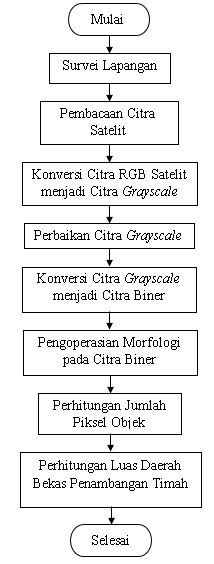
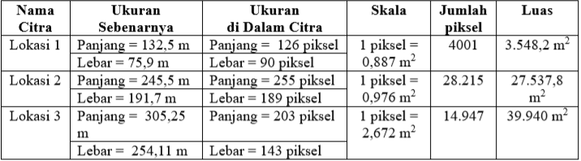

Pengolahan Citra Digital Untuk Menghitung Luas Daerah Bekas Penambangan Timah
Penulis:
Rika Favoria Gusa, S.T, M.T.
Oleh:
-
Calvin
1021711017
-
Dede Naruari
1021711022
1. Latar Belakang
Luas daerah bekas penambangan timah yang banyak terdapat di wilayah Provinsi Kepulauan Bangka Belitung dapat diidentifikasi dan dianalisis melalui pengolahan citra satelit. Banyak di antara daerah bekas penambangan timah tersebut ditinggalkan begitu saja paska penambangan tanpa ada usaha reklamasi ataupun pemanfaatan kembali. Oleh karena itu, dalam penelitian ini akan dilakukan pengolahan citra digital berupa citra satelit dari suatu wilayah tertentu di pulau Bangka yang memiliki daerah bekas penambangan timah agar dapat dihitung luasannya. Hal ini perlu dilakukan untuk mengetahui berapa luas daerah bekas penambangan timah yang harus diolah kembali ataupun direklamasi sehingga kerusakan lingkungan akibat penelantaran bekas penambangan timah dapat dikurangi.
2. Dasar Teori
A. Citra Digital
Secara umum, pengolahan citra digital menunjuk pada pemrosesan gambar 2 dimensi dengan menggunakan komputer. Dengan pengolahan citra, sebuah citra ditransformasi menjadi citra lain. Berdasarkan nilai pikselnya, citra digital dapat dikelompokkan ke dalam tiga jenis citra, yaitu:
-
Citra Warna/RGB
(klik disini) -
Citra Grayscale
(klik disini) -
Citra Biner
(klik disini)
B. Perbaikan Citra
Perbaikan citra bertujuan meningkatkan kualitas tampilan citra untuk pandangan manusia atau untuk mengkonversi suatu citra agar memiliki format yang lebih baik sehingga citra tersebut lebih mudah diolah dengan komputer. Perbaikan terhadap suatu citra dapat dilakukan antara lain dengan metode perenggangan kontras (contrast stretching). Perenggangan kontras adalah teknik yang sangat berguna untuk memperbaiki kontras citra terutama citra yang memiliki kontras rendah.
C. Operasi Morfologi
Kata morfologi secara sederhana dapat diartikan sebagai bentuk dan struktur suatu objek. Operasi morfologi menggunakan dua input himpunan yaitu suatu citra (pada umumnya citra biner) dan suatu kernel. Ada dua operasi dasar morfologi yaitu:
-
Dilasi
(klik disini) -
Erosi
(klik disini)
D. Analisis Objek
Analisis objek didasarkan pada ciri khas (feature) geometri pada objek tersebut. Luas atau ukuran merupakan salah satu fitur dari objek di dalam citra dan dapat dihitung menggunakan persamaan:

Dengan
m : jumlah baris piksel citra
n : jumlah kolom piksel citra
(i,j) : koordinat spasial piksel
f(i,j) = 1 jika (i,j) adalah piksel objek dalam citra biner
3. Metode Penelitian

4. Hasil dan Pembahasan
A. Hasil Survey Lapangan
Penelitian ini dimulai dengan survei lapangan ke beberapa lokasi (daerah bekas penambangan timah) yang ada di Pemali, Kabupaten Bangka. Hal ini dilakukan untuk memperoleh data berupa koordinat, ukuran (panjang dan lebar) serta gambar/foto daerah bekas penambangan timah yang berguna untuk proses pengolahan selanjutnya. Data koordinat dan ukuran daerah bekas penambangan timah yang akan diolah citranya disajikan pada Tabel 1.
Tabel 1 Data koordinat dan ukuran beberapa daerah bekas penambangan timah di Pemali Kabupaten Bangka.
B. Tahapan Pengolahan Citra
1. Setelah memperoleh koordinat lokasi, dilakukan pembacaan citra satelit yang menampilkan lokasi (daerah bekas penambangan timah) yang telah disurvei sebelumnya. Citra ini merupakan citra warna (RGB).
2. Citra daerah bekas penambangan timah yang masih berupa citra warna diubah menjadi citra grayscale dengan menggunakan fungsi rgb2gray yang terdapat di dalam program Matlab untuk memudahkan proses pengolahan citra selanjutnya. Fungsi ini menghitung nilai keabuan tiap piksel citra grayscale dari nilai intensitas komponen warna dasar (red, green dan blue) piksel pada citra RGB. Gambar 1 merupakan citra grayscale dari daerah bekas penambangan timah yang telah disurvei.
3. Untuk memperbaiki kualitas citra, dilakukan perenggangan kontras agar objek-objek yang terdapat di dalam citra terlihat lebih jelas. Perenggangan kontras citra dilakukan dengan menggunakan fungsi imadjust setelah sebelumnya dihitung terlebih dahulu nilai intensitas piksel citra yang paling rendah (minimum) dan paling tinggi (maksimum).
4. Citra hasil perenggangan kontras selanjutnya diubah menjadi citra biner dengan menggunakan fungsi im2bw. Fungsi ini mengubah nilai keabuan tiap piksel citra hasil perenggangan kontras menjadi bernilai 0 atau 1 tergantung dari nilai ambang (threshold) yang dihitung dengan menggunakan metode Otsu. Jika nilai keabuan piksel sama dengan atau lebih besar dari nilai ambang, maka piksel tersebut akan bernilai 1 (berwarna putih). Sebaliknya, jika nilai keabuan piksel lebih kecil dari nilai ambang, maka piksel tersebut akan bernilai 0 (hitam). Pada citra biner yang dihasilkan, daerah bekas penambangan timah dan beberapa bagian citra yang lain menjadi berwarna putih. Gambar 2 menyajikan citra biner yang dihasilkan.
5. Dalam proses pengolahan citra daerah bekas penambangan timah, dilakukan operasi morfologi yaitu erosi dan dilasi. Proses erosi diterapkan pada citra biner daerah bekas penambangan timah dengan menggunakan fungsi imerode untuk mengurangi/menghilangkan objek-objek yang tidak diperlukan dalam proses pengolahan citra selanjutnya. Elemen pembentuk struktur (structuring element/SE) yang digunakan ialah matriks bujur sangkar dengan seluruh elemen bernilai 1. Ukuran SE berbedabeda untuk tiap citra biner tergantung dari berapa banyak/besar objek yang ingin dihilangkan. Citra hasil proses erosi ditampilkan dalam Gambar 3. Setelah diperoleh citra hasil proses erosi, dipilih objek yang akan dihitung luasnya yaitu daerah bekas penambangan timah. Pemilihan dilakukan dengan menunjuk titik (piksel) yang merupakan bagian dari objek dengan menggunakan mouse pointer. Dengan cara ini, dapat diperoleh koordinat (x,y) piksel yang ditunjuk sehingga objek yang memiliki piksel tersebut akan terpilih.
Selanjutnya, dilakukan proses dilasi pada citra-citra tersebut menggunakan fungsi imdilate dan SE yang sama dengan proses erosi. Hal ini dimaksudkan agar bagian objek yang hilang akibat proses erosi dapat dikembalikan karena bagian objek (piksel-piksel) tersebut termasuk piksel-piksel yang akan dihitung untuk mengetahui luas objek. Citra hasil proses dilasi disajikan dalam Gambar 4.
6. Penghitungan jumlah piksel objek dilakukan pada citra hasil proses dilasi dalam Gambar 4 dengan menggunakan fungsi bwarea. Fungsi ini menghitung jumlah piksel yang bernilai 1 (berwarna putih). Tabel 2 menyajikan jumlah piksel objek untuk masing-masing citra lokasi.
Tabel 2 Jumlah piksel objek citra (daerah bekas penambangan timah).
7. Untuk menghitung luas objek citra (daerah bekas penambangan timah) dalam satuan m2, diperlukan skala yang mewakili ukuran sebenarnya dari daerah tersebut. Pada survei lapangan yang dilakukan di awal penelitian, telah diperoleh ukuran panjang dan lebar daerah bekas penambangan timah dalam satuan meter seperti dapat dilihat pada Tabel 1.Ukuran panjang dan lebar objek citra juga dapat dihitung dengan memilih titik-titik objek yang memiliki koordinat tertentu yaitu xmin (titik objek paling kiri), xmax (titik objek paling kanan), ymin (titik objek paling atas) dan ymax (titik objek paling bawah). Titik-titik tersebut dipilih dengan menggunakan fungsi ginput dan mouse pointer. Selisih nilai xmin dan xmax menyatakan panjang objek citra sedangkan selisih nilai ymin dan ymax menyatakan lebar objek citra. Skala dapat dihitung dengan membandingkan ukuran (panjang dan lebar) sebenarnya dari daerah bekas penambangan timah dan ukuran (panjang dan lebar) objek daerah bekas penambangan timah di dalam citra. Setelah nilai skala diperoleh, maka luas objek dalam satuan m2 dapat diketahui. Hasil penghitungan luas objek citra (daerah bekas penambangan timah) dirangkum dalam Tabel 3.
Tabel 3 Hasil penghitungan luas objek citra (daerah bekas penambangan timah).
5. Kesimpulan
1. Tahapan proses pengolahan citra digital yang dimulai dari pembacaan citra satelit daerah bekas penambangan timah, dilanjutkan dengan pengubahan citra satelit berupa citra warna (RGB) menjadi citra grayscale, perbaikan citra grayscale dengan perenggangan kontras, pengubahan citra grayscale yang telah diperbaiki menjadi citra biner serta penerapan operasi morfologi yaitu erosi dan dilasi pada citra biner dapat digunakan untuk menghitung jumlah piksel objek citra (daerah bekas penambangan timah).
2. Ukuran sebenarnya (panjang dan lebar) daerah bekas penambangan timah diperlukan untuk mengetahui nilai skala yang digunakan untuk dapat menghitung luas objek citra (daerah bekas penambangan timah) dalam satuan m2.
3. Lingkungan di sekitar daerah bekas penambangan timah cukup berpengaruh pada proses pengolahan citra. Semakin kecil selisih nilai intensitas objek (daerah bekas penambangan timah) dengan lingkungan sekitarnya, dengan kata lain, warna objek mirip dengan warna latar/objek lain, maka akan semakin sulit untuk memilih objek (daerah bekas penambangan timah) tersebut untuk dihitung luasnya.